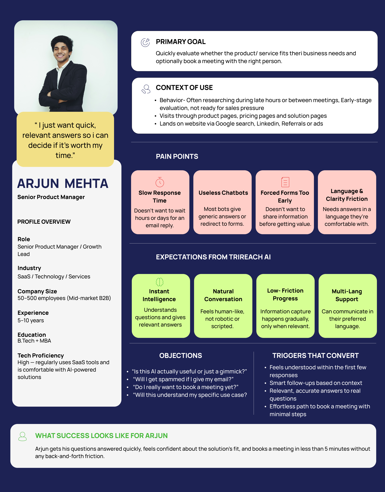
← Back to projects
AI that talks.
Trigma ™
UI/UX DESIGN · INTERNSHIP PROJECT
Taira™
AI that talks.
So your team can.
Designing a conversational AI experience that connects website visitors with the right Trigma team.
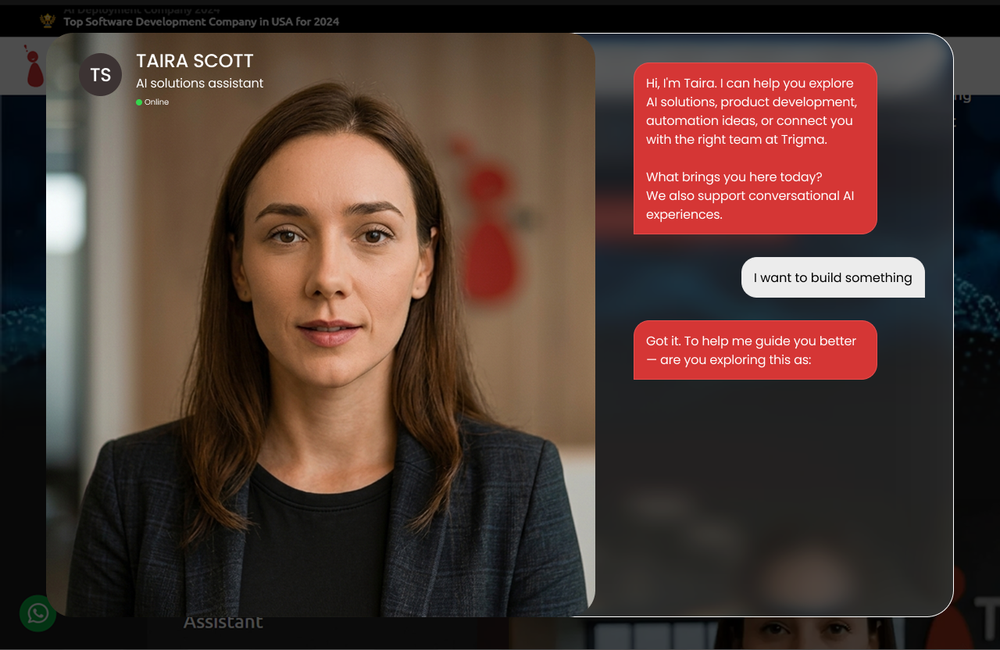
Meet TairaAI video assistant
SCROLL TO EXPLORE ↓
01
CONTEXT
What is Taira?
Taira is Trigma's AI-powered conversational assistant, designed to give website visitors a more natural way to explore AI solutions, ask questions, share context and connect with the right team.
01Text chat
For quick questions and low-friction conversations.
02Video chat
For a more human, guided experience with Taira.
“The goal was to make conversations feel natural, helpful and human — not like a form.”
02
THE CHALLENGE
THE DESIGN BRIEF
Turn the first website interaction into a useful conversation — without making qualification feel like a form.
01
The experience had to give visitors value first, while quietly collecting the context Trigma's team needed to take the conversation forward.
THE TENSION
One interface had to satisfy three very different expectations.
01Visitor needs
Quick answers, low friction and no immediate sales pressure.
02Sales needs
Useful context, clear intent and better-qualified conversations.
03Operations needs
Structured information, reliable handoff and a consistent process.
03
ONE EXPERIENCE · THREE STAKEHOLDERS
Rather than designing around one user, I mapped the people who interact with the experience before, during and after a conversation.
THE INSIGHTThis wasn't just a chatbot problem.
It was a handoff problem.
It was a handoff problem.
ARJUN · WEBSITE VISITOR
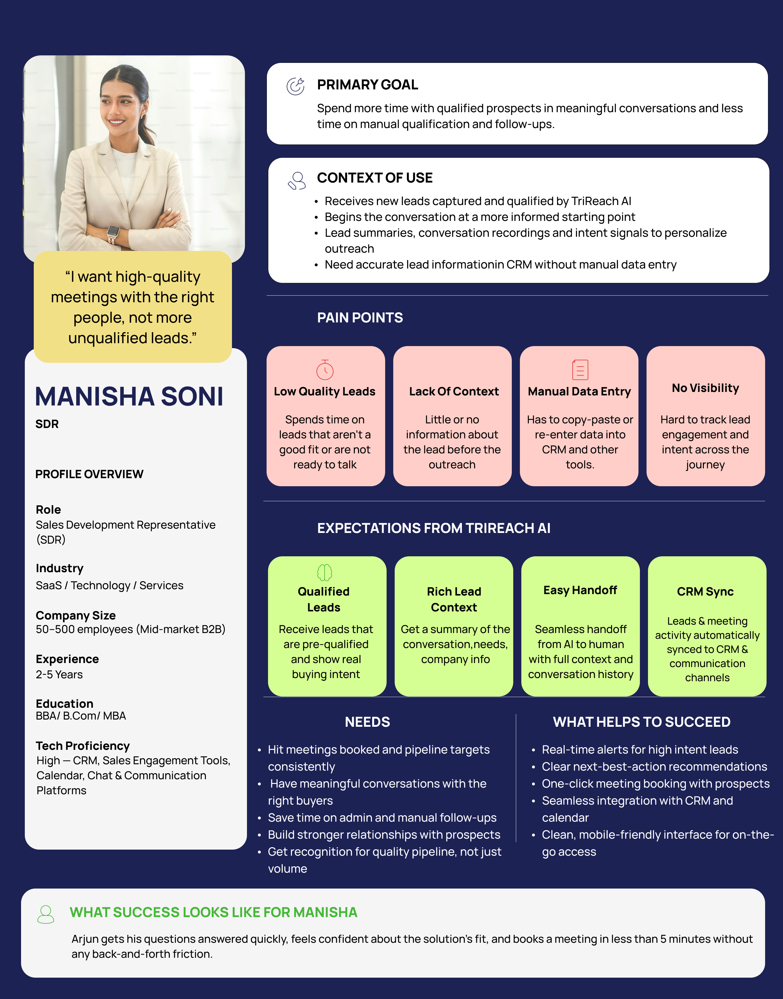
“I need enough context to understand who I'm talking to.”
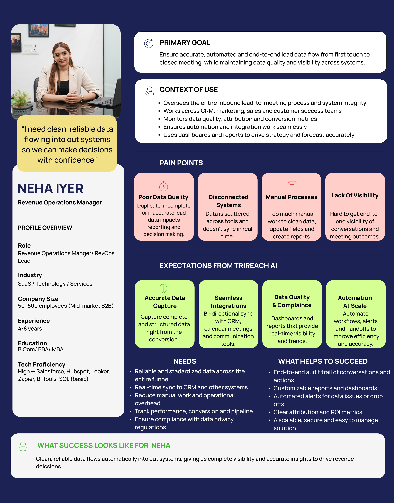
“I need that information captured consistently and passed into the next step.”
04
CONVERSATION ARCHITECTURE
Two flows. One principle.
Both journeys are designed around the same idea: progressive, contextual and human.
TEXT CHAT FLOW
VisitorIntentValueQualificationContactMeeting
VIDEO CHAT FLOW
VisitorConsentConversationQualificationHandoffMeeting
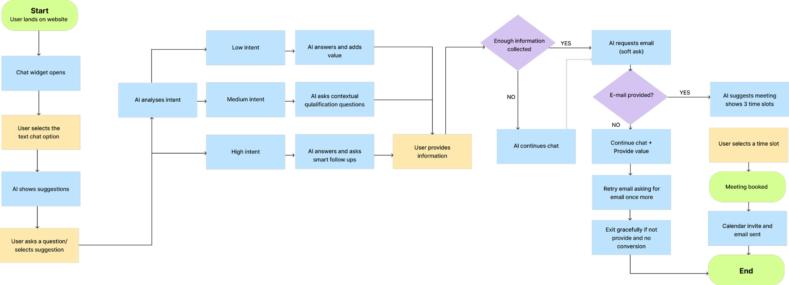
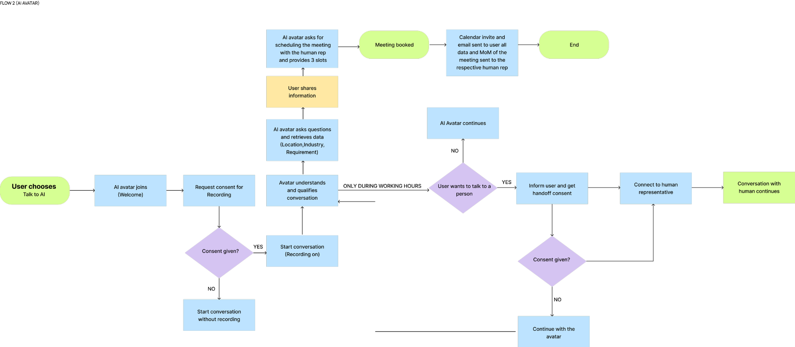
05
DESIGNING FOR INTENT
Qualification shouldn't happen all at once.
The conversation adapts to what the visitor appears to need. Value comes first; contact capture follows only when the conversation has enough context to make the next step useful.
LOW INTENTAI provides value and keeps the conversation open.
MEDIUM INTENTAI asks contextual questions to understand the need.
HIGH INTENTAI moves toward qualification and conversion.
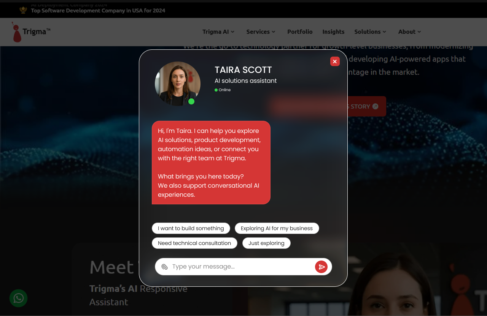
06
THE DESIGN SYSTEM
From individual screens to a reusable conversation system.
Once the interaction logic was clear, I translated it into a compact UI system for consistency across states and touchpoints.
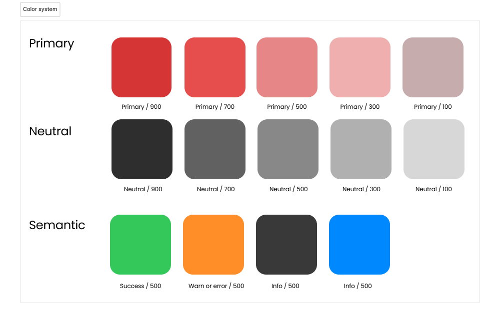
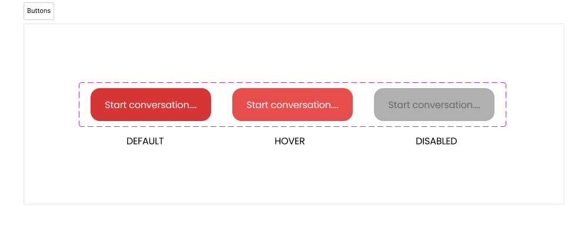
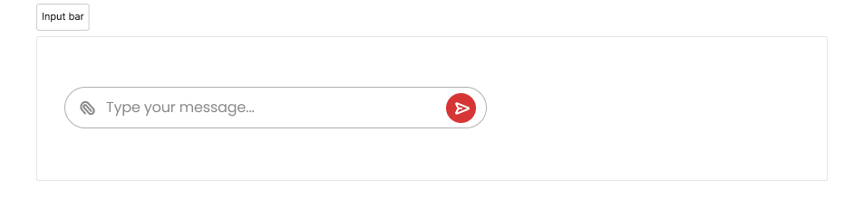
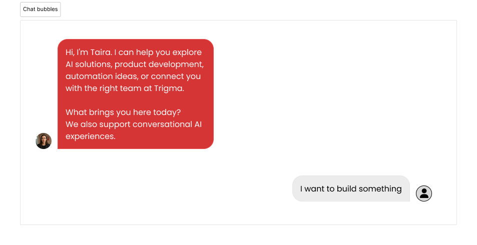
07
FROM WIREFRAME TO FINAL INTERFACE
Structure first.
Polish second.
I moved from grayscale structure and conversation logic into a high-fidelity interface aligned with Trigma's existing visual identity — dark surfaces, red action states, rounded conversation elements and a more human AI presence.
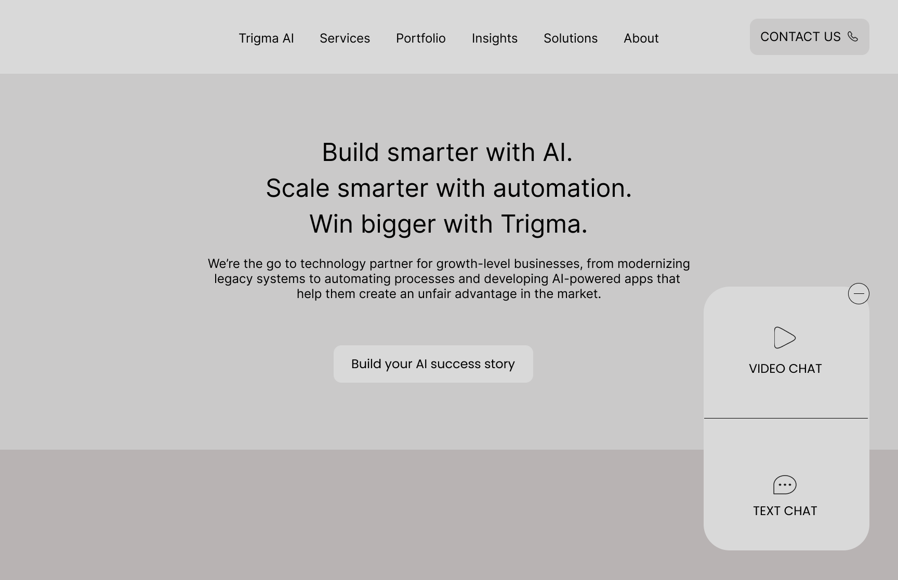
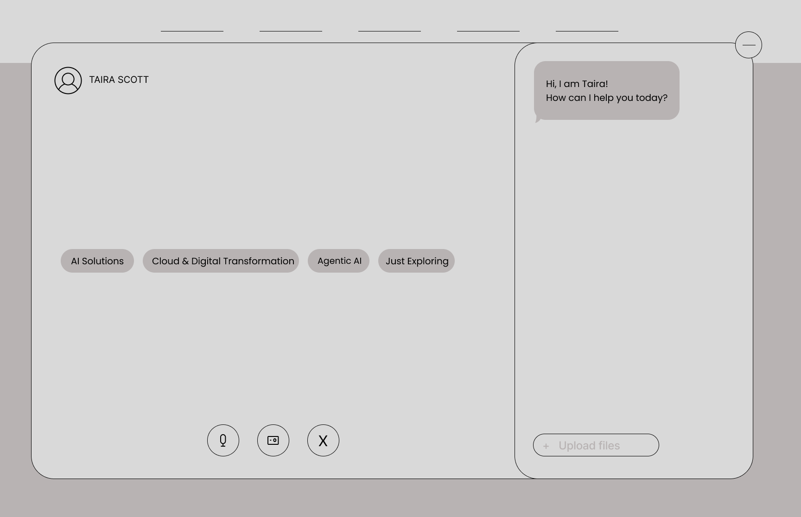
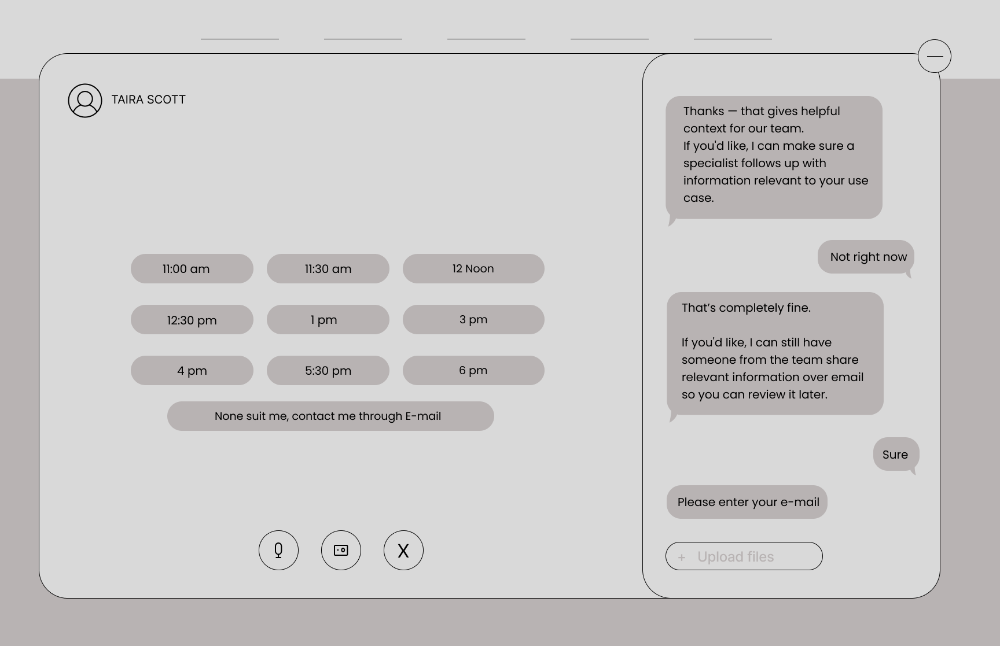
08
THE FINAL EXPERIENCE
Meet Taira.
Explore → understand → qualify → connect.
OUTCOME
Designed and validated for handoff to development.
The final concept covered both text and AI-avatar conversation flows. The Trigma team validated the intent-based branching and progressive information-capture approach ahead of development. The experience was not deployed live during the internship.
NEXT PROJECT
View case study ↗